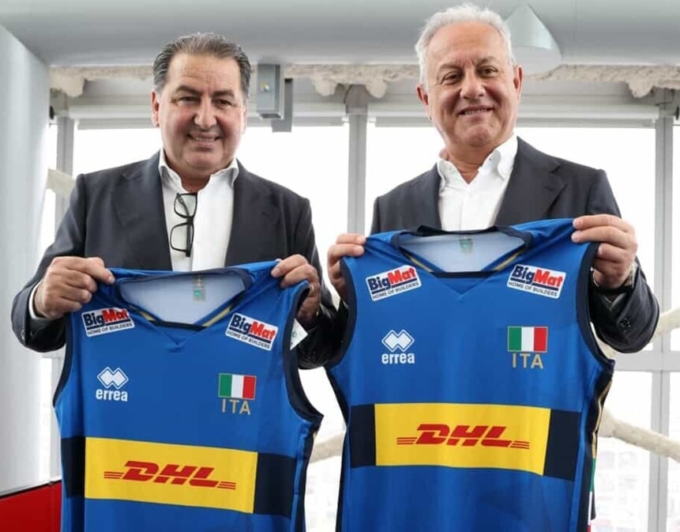
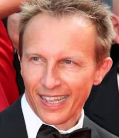

L'impresa storica
Nel 2025, le nazionali italiane di pallavolo hanno scritto una pagina storica. Il 28 Settembre 2025, la nazionale maschile guidata da Ferdinando De Giorgi ha conquistato il titolo di campione del mondo, battendo la Bulgaria per 3 set a 1 (25-21, 25-17, 17-25, 25-10) nella finale dei Mondiali maschili di Pallavolo!
Tre settimane prima, il 7 Settembre 2025, la nazionale femminile allenata da Julio Velasco è diventata Campione del mondo battendo la Turchia 3-2 in un'interminabile finale a Bangok, in Thailandia. Il successo di questa squadra non accenna a fermarsi: dopo l'oro olimpico di Parigi 2024, l'Italvolley femminile ha raggiunto 36 vittorie consecutive, coronando il proprio percorso con il titolo mondiale.
Con queste vittorie, l'Italia è diventata il secondo Paese nella storia, dopo l'Unione Sovietica (1952 e 1960), a conquistare nello stesso anno il titolo mondiale sia con la nazionale maschile che con quella femminile — un'impresa che consacra definitivamente l'Italvolley tra le grandi potenze mondiali dello sport.
Altri premi vinti dalle giocatrici e dai giocatori
La nazionale italiana femminile di pallavolo ha conquistato una storica vittoria alle Olimpiadi di Parigi 2024, salendo per la prima volta sul gradino più alto del podio. Con una prestazione straordinaria, le azzurre hanno superato avversarie di alto livello, dimostrando grande tecnica, forza e spirito di squadra.
Altri importanti riconoscimenti conferiti alla nazionale femminile sono:
- il premio MVP (Most Valuable Player), che è stato consegnato a Alessia Orro, palleggiatrice della nostra nazionale;
- il premio di miglior pallegiatrice, consegnato a Alessia Orro;
- il premio di miglior centrale,vinto da Anna Danesi;
- il premio di miglior libero, vinto da Monica De Gennaro.
Altri importanti riconoscimenti conferiti alla nazionale maschile sono:
- il premio MVP (Most Valuable Player), che è stato consegnato ad Alessandro Michieletto, schiacciatore della nostra nazionale;
- il premio di miglior pallegiatore, consegnato a Simone Giannelli;
- il premio di miglior libero, vinto da Fabio Balaso;
- il premio di miglior opposto, vinto da Yuri Romanò.
Il mondo sarebbe meglio se funzionasse come una partita di pallavolo
La pallavolo è un sport ganzizzimo, è quasi una parabola di un mondo ideale, di un mondo possibile. Perchè solo in un mondo ideale i missili sono quelli che tira la Egonu e sono missili che non fanno male. In un mondo ideale quando una bomba tocca terra si festeggia. Ogni invasione viene subito fischiata.
Si ergono muri, ma stanno su solo un istante, e se dopo hai fatto punto ci si abbraccia tutti perchè il vostro muro è l'unico muro che invece di dividere unisce.
E allora sarebbe davvero parecchio meglio se il mondo funzionasse come una partita di pallavolo.
Siete un movimento fantastico.
-Cristiano Militello